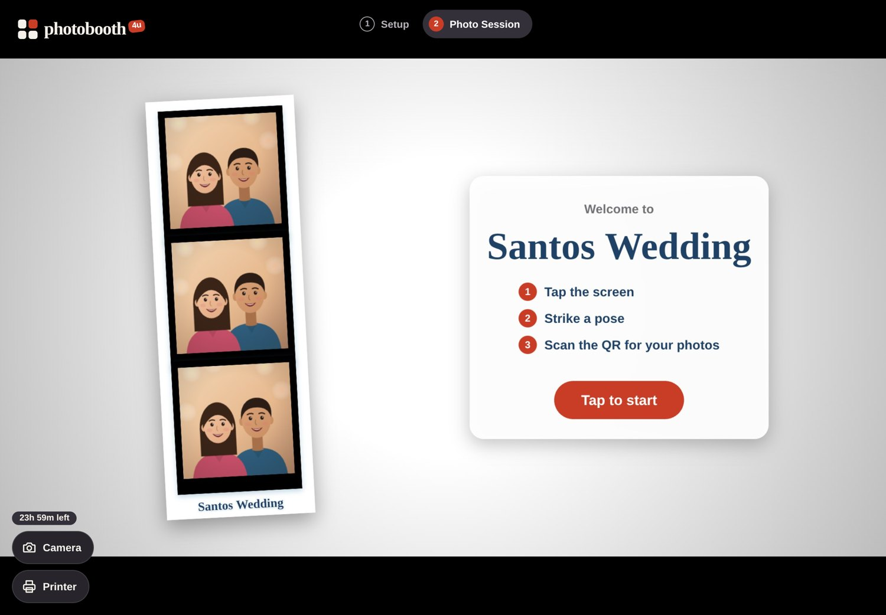
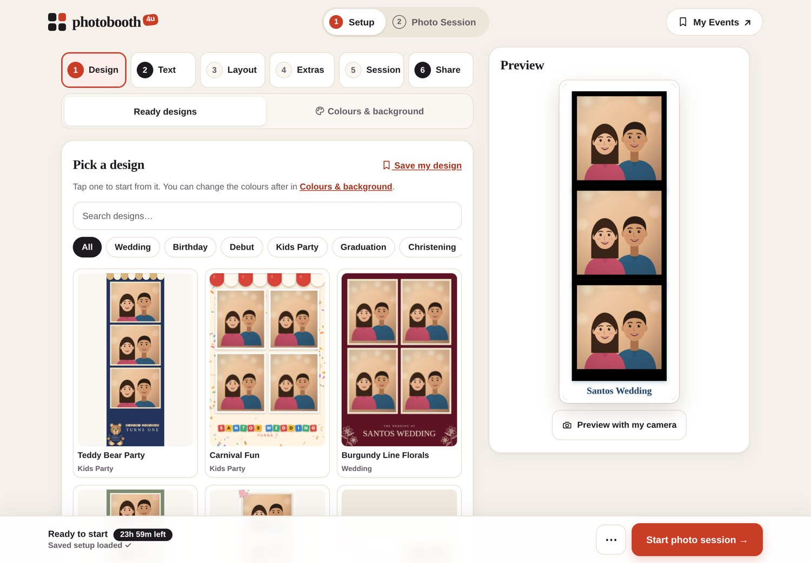
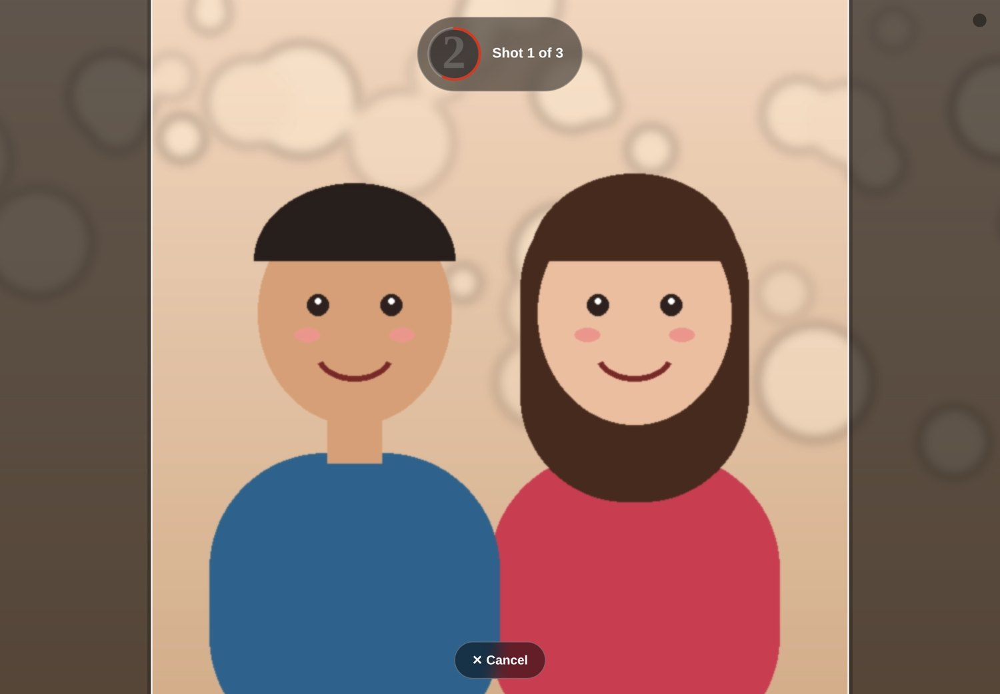
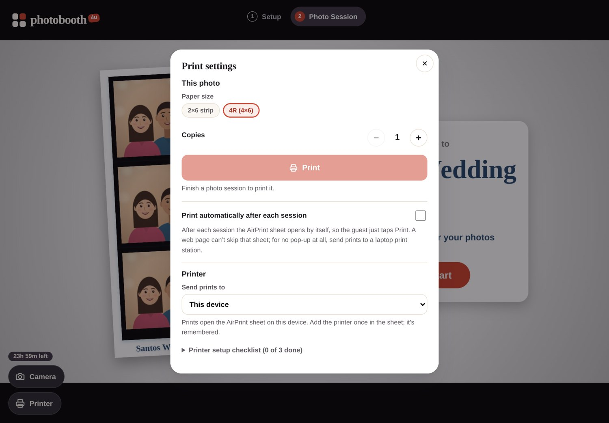
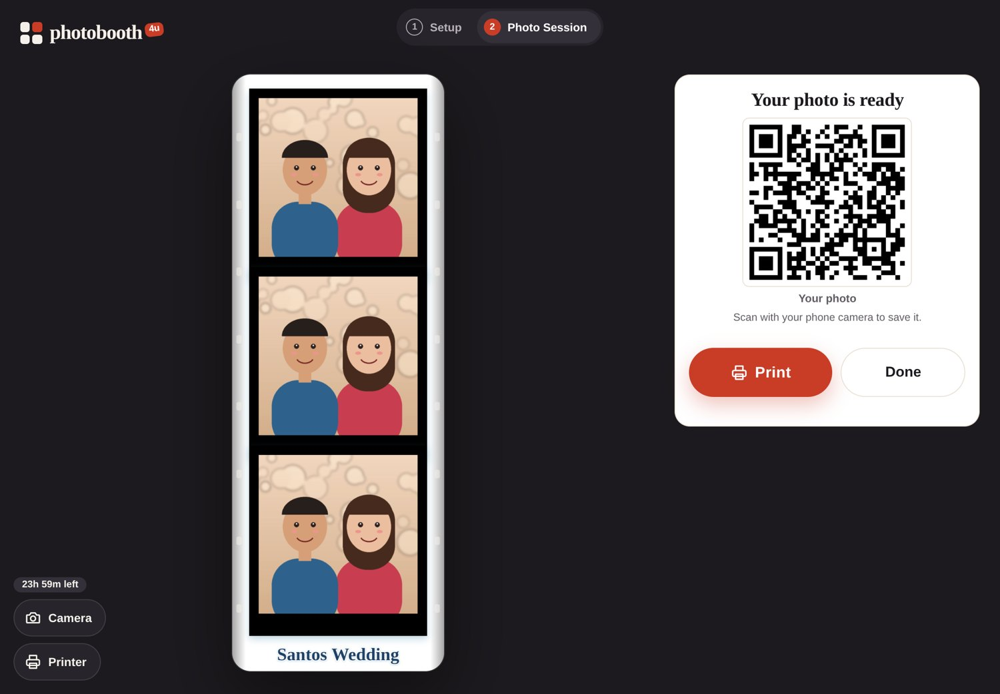

How to run photobooth4u on an iPad or Android tablet: settings, camera, printing and keeping guests in the booth. In a hurry? Page 2 is a one-page quick start for event day.

★ Event day
Do these in order. Each step has its own page if you need more detail.
Tablet on its charger, on a stand at the guests' eye level, screen and front camera facing the guests. Landscape works best. (Page 5)
Screen never locks, Do Not Disturb on, Low Power / Battery Saver off, volume up for the countdown beeps. (Page 3)
Venue Wi-Fi, a pocket Wi-Fi or a phone hotspot. If you print over Wi-Fi, put the printer on the same network. (Pages 7–8)
iPad: Safari. Android: Chrome. Go to photobooth4u.netlify.app. The tablet is already unlocked from last time. Tap Allow if it asks for the camera. (Page 4)
Design, name and date, layout. Lifetime codes: type the event name in 6 Share. Your last setup is saved, so usually you only change the name.
Tap Printer (bottom left), pick the paper size, then do one test print and choose your printer in the print sheet. Optional: Print automatically after each session. (Page 7)
Take a session yourself, scan the QR with your phone, and check the print.
Turn on Lock booth (if included) and Guided Access (iPad) or App pinning (Android) so guests stay in the booth. Open Photo Session. You're ready. (Page 6)
01 · Before you start
02 · Once per tablet
So the screen never sleeps and no pop-ups land on top of the booth during the event.
03 · First time on each tablet
iPad: Safari. Android: Chrome. Go to photobooth4u.netlify.app.
Type your PB-XXXX-XXXX-XXXX code and tap Unlock. Lifetime codes open My Events first: tap Open photo booth.
Tap Allow when the tablet asks. The live view appears in Setup.
The tablet stays unlocked. Each tablet uses one of your device slots. Lifetime codes can see and remove devices in My Events → Your details & devices.
On an iPad, run the booth in a Safari tab. If you added it to the Home Screen, the AirPrint sheet may not open from there.
Don't use Private browsing or Clear History and Website Data: they sign the tablet out and remove photos still waiting to upload.
Every event
Set up the event
In Setup, go through the 6 steps with Next: Design, Text (name and date), Layout, Extras, Session (countdown, camera, light, lock) and Share (event name for lifetime codes, the All photos QR). Then tap Start photo session.
Everything saves by itself, and every device on your code gets the same design. More detail: the Setup guide, page 4.
Type the exact same event name on both. They share one gallery, one QR and one design.

04 · Looking good
The booth uses the tablet's front camera, so guests see themselves on the screen while they pose. On tablets the session fills the whole screen.
Camera at eye level, about 1.5–2 m from the guests. For groups, step the stand back rather than zooming.
Light should face the guests. Avoid a bright window behind them. A ring light next to the tablet helps a lot.
Setup → 7 Session → Light, sound and start → Screen flash: the screen turns white for each photo and lights up faces.
Mirror flips the preview like a mirror. The final photo looks exactly like the preview.
Tap Camera (bottom left) to switch. The back camera is sharper but faces away from the screen, so guests can't see themselves.

Using your DSLR or a capture card
Tablet app (recommended): Nikon, Canon EOS and Sony Alpha work over USB with live view and the real shutter. Plug the camera into the tablet's USB port with a data cable (USB-C or an OTG adapter), switch it on and tap OK when Android asks to allow it. In the booth pick Nikon / Canon / Sony camera over USB cable in the Camera list. Canon: Live View shoot on, mode dial P / Tv / Av / M. Sony: USB Connection → PC Remote. Nikon: PTP / MTP mode. Save as JPEG. Other makes: use the camera's webcam mode or an HDMI capture card. In Chrome instead of the app, use Camera → DSLR / mirrorless over USB (test at photobooth4u.netlify.app/camera-test/).
A DSLR can't be controlled from an iPad. On an iPad with USB-C (iPadOS 17 or newer), a USB webcam or HDMI capture card can show up in the Camera menu. Test it at home before the event.
05 · Self-service booth
Two locks work together: Lock booth hides Setup inside photobooth4u, and the tablet's own lock keeps guests from leaving the browser.
Setup → 7 Session → Lock booth: set a 4-digit PIN, then Lock booth now. Guests only see start, photos, QR and print. To get back in, tap the small lock in the top-right corner and enter the PIN.
Settings → Accessibility → Guided Access: on, and set a passcode. Open the booth in Safari, triple-click the top button (or the Home button) → Start. To end it, triple-click again and enter the passcode.
Settings → Security (or Security & privacy → More security settings) → App pinning: on, with "Ask for PIN before unpinning". Open Recent apps, tap Chrome's icon → Pin. To unpin, hold Back + Recents (or swipe up and hold) and enter your PIN.
Start without touching
The default. Guests tap the screen to start, and tap again for each photo if you chose Wait for a tap.
Guests wave at the camera to start. Setup → 7 Session → Light, sound and start → Start.
Starts when someone smiles at the camera. Works best with good light on faces.
06 · If your package includes printing
Two ways. Pick the one that matches your printer.
Canon Selphy CP1300 / CP1500, Epson, HP and other AirPrint (iPad) or Mopria (Android) printers.
Put the printer and the tablet on the same Wi-Fi.
In the booth tap Printer, pick the paper size, and print one test.
Choose your printer in the print sheet. The tablet remembers it.
Optional: Print automatically after each session. The print sheet then opens by itself and the guest just taps Print.
Android: if no printer shows, install Mopria Print Service or Canon Print Service from the Play Store and turn it on.
For DNP / HiTi printers (not AirPrint), or when guests shouldn't see a print sheet.
On the laptop next to the printer, open the Print Helper and photobooth4u.netlify.app/print-station/, sign in with your code, and pick a printer for each size.
On the tablet: Printer → Send prints to → Laptop print station. The booth shows when the station is on.
Prints go to the laptop and print with no pop-up, including Print automatically.
Free trial: the tablet shows a 6-digit pairing code; type it on the print-station page.

07 · When the venue's internet is bad
Load the booth and check Setup before the event starts, while the internet works.
Sessions carry on. Each photo is kept on the tablet and uploads by itself when the internet is back. Guests still get their QR: "Scan now · your photo arrives once the booth is back online."
Setup → 6 Share → Download QR sign, then print it for the table. Guests can scan it any time to see every photo of the event.
The Photo Session panel shows Waiting to upload. Leave the booth open on internet until that list is gone.

08 · After the event
In Setup, tap My Events ↗ (top right): it opens already signed in. Or use photobooth4u.netlify.app/lifetime/ on any phone.
Send the online gallery by Messenger. Your client can Download all there.
Photos are deleted 7 days after the event's last photo. Send the link the same day.
09 · Quick fixes
| Problem | Fix |
|---|---|
| "We need access to your camera" | iPad: Settings → Apps → Safari → Camera → Allow, then reload. Android: tap the icon left of the address → Permissions → Camera → Allow, then reload. |
| Camera black or frozen | Usually after switching apps or a call. Reload the page. Close other apps that use the camera. |
| The screen dims or locks | iPad: Auto-Lock → Never. Android: Screen timeout to the longest. Keep the tablet charging. |
| Messages or calls pop up | Turn on Do Not Disturb before the event. |
| Guests leave the booth or open other apps | Use Guided Access (iPad) or App pinning (Android), plus Lock booth. Page 6. |
| No print sheet appears (iPad) | Open the booth in a Safari tab, not from a Home Screen icon. Or use a laptop print station. |
| Printer isn't in the list | Same Wi-Fi as the tablet? Restart the printer. Android: install Mopria or Canon Print Service. |
| "Already used on another device" | All device slots are taken. Lifetime: My Events → Your details & devices → Remove an old one. Otherwise message us. |
| "Photos waiting to upload" | The internet dropped. Keep the booth open: they upload by themselves, or tap Retry now. |
| The QR code doesn't appear | Check the internet, and that the event name is set in Setup → 6 Share. |
| Forgot your code | My Events → Forgot your code? It's emailed to the address on your account. |
| Countdown is silent | Volume up, side switch off silent, and Countdown beeps on in Setup → 7 Session. |
We're on Facebook Messenger: m.me/roktetnachi